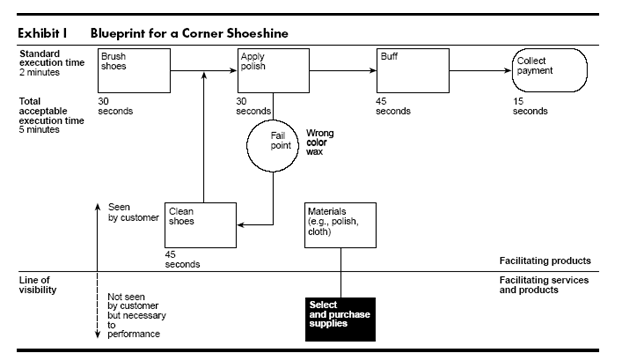
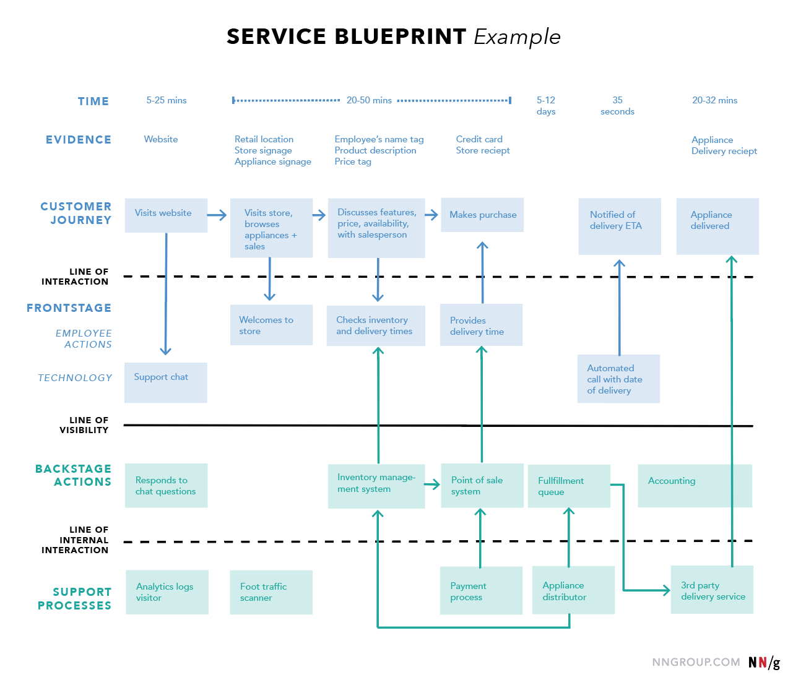
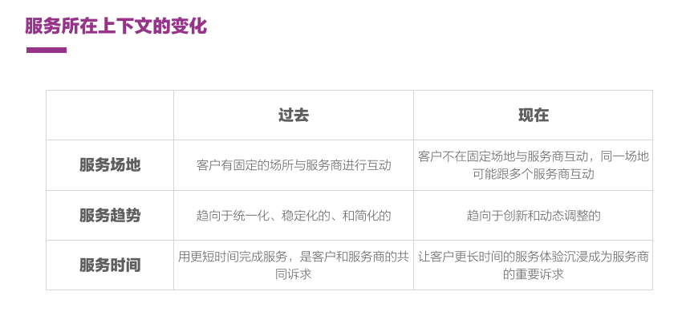
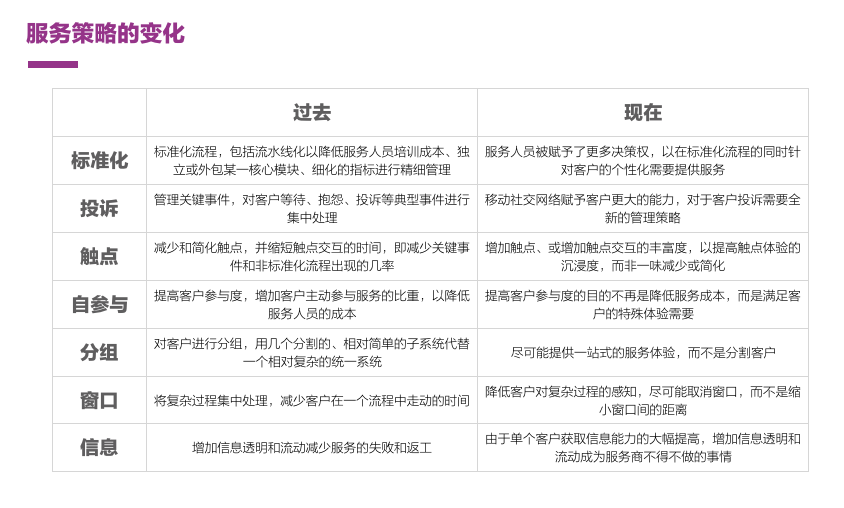

服务蓝图（Service Blueprint）是服务设计中重要的实践之一，本文将回到这一实践的本源，重新思考其核心逻辑在新的消费环境中是否需要演进。
溯源
服务蓝图（Service Blueprint）可追溯1984年1月哈佛商业评论中G. Lynn Shostack的文章《Designing Services That Deliver》，此文首次将对服务的设计分为以下几个过程：
- 定义流程；
- 区分出服务失败点；
- 引入时间效能；
- 分析盈利模型。
 一个擦鞋店的服务设计
此外，Shostack还建议了执行这个蓝图的几个要点，其中包括：
- 客户可见和不可见的部分，用可视线（Line of Visibility）进行分隔；
- 强调统一制式的物品（Tangible Evidence）对服务承诺的正向影响，例如航空公司整齐划一的制服、物品、或用具；
- 强调人对于整个服务体验的影响。
由于欧美国家时薪制度的标准化，标准服务流程中的时间估算，可以计算出一项服务的成本和盈利模型，因此服务蓝图有着强烈的标准化、工业化、系统化、商业化、和控制化的基本属性。
Shostack在本章的最后也指出，服务蓝图的作用可归纳为：帮助服务提供商节省服务时间、提高服务效率、以及高视角完成对服务流程的管理。不得不忽略的，是这一理论的出现，正处于美国进入服务业时代的1980年代中期，企业迫切需要一种对服务进行有效规划和管理的手段。
延续
服务蓝图偏流程和系统效率的特点延续到近几年服务设计的兴起。在服务设计中，服务蓝图被认为是客户体验地图（Customer Journey Map）的延伸，在传统客户体验地图的基础上添加了客户触点、跨部门的前中台服务人员行为、后台系统流程支持等元素。
 (原图地址)
许多元素，例如中后台的交互、可视线、物理实物、服务时间等都被保留，其本质并没有脱离G. Lynn Shostack最初的概念——系统、任务、流程、和效率依然是服务蓝图的主题词。
全新上下文
如果我们回到Shostack所处的时代，服务有如下特点：
- 客户有固定的场所与服务商进行互动，如银行、酒店、或是机舱；
- 为了追求效率和成本考虑，对于相同事务的客户有着统一的服务流程，而随着时间的推移，服务本身是趋向于统一化、稳定化的、和简化的；
- 时间即服务成本、客户也期待更快速的服务，因此用更短时间完成服务，是客户和服务商的共同诉求；
当我们走完21世纪的第一个十五年，服务对于我们而言，有着惊人的变化：
- 客户不在固定场地与服务商互动，同一场地可能跟多个服务商互动；
- 客户追求多元化、定制化、个性化的服务流程，服务需要不断创新，而不是趋于稳定和一尘不变；
- 客户体验开始替代完成任务，短时间完成服务不再成为唯一诉求，反而成为服务商的机会。

策略的变化
在传统上下文中，服务提升的策略有以下几种：
- 标准化流程，包括流水线化以降低服务人员培训成本、独立或外包某一核心模块、细化的指标进行精细管理；
- 管理关键事件，对客户等待、抱怨、投诉等典型事件进行集中处理；
- 减少和简化触点，并缩短触点交互的时间，即减少关键事件和非标准化流程出现的几率；
- 提高客户参与度，增加客户主动参与服务的比重，以降低服务人员的成本，例如便利的自助服务；
- 对客户进行分组，用几个分割的、相对简单的子系统代替一个相对复杂的统一系统，例如银行的对公和对私业务；
- 将复杂过程集中处理，减少客户在一个流程中走动的时间，例如多个窗口的转移；
- 增加信息透明和流动减少服务的失败和返工。
在新的上下文中，这些策略可能发生变化、或者被赋予了新的意义。
- 服务人员被赋予了更多决策权，以在标准化流程的同时针对客户的个性化需要提供服务；
- 移动社交网络赋予客户更大的能力，对于客户投诉需要全新的管理策略；
- 增加触点、或增加触点交互的丰富度，以提高触点体验的沉浸度，而非一味减少或简化；
- 提高客户参与度的目的不再是降低服务成本，而是满足客户的特殊体验需要；
- 尽可能提供一站式的服务体验，而不是分割客户；
- 降低客户对复杂过程的感知，尽可能取消窗口，而不是缩小窗口间的距离；
- 由于单个客户获取信息能力的大幅提高，增加信息透明和流动成为服务商不得不做的事情；

服务蓝图实践
一项设计实践是否需要演进，取决于：1）其所在上下文是否发生变化；2）其是否鼓励新的设计策略。从这个角度来看，服务蓝图实践传统逻辑所在上下文发生巨大变化、其所鼓励的设计策略（简化、稳定化、标准化、专业化等）也发生巨大变化，我们应该重新审视服务蓝图实践本身是否符合现代服务体验设计的需要。
在我们的实践中，该实践的真正意义有两点：
- 用一种概括性的手段，梳理服务体验的诸多要素，初步建立上下文，寻找到设计的突破口，即建立问题或机会假设（Hypothesis），基于此进入深入的设计研究；
- 通过系统化的分析，寻找内部系统的边界、集成、和信息流动，帮助我们建立服务背后信息系统的初步上下文。
注意，此二点都不是完整的设计实践，而是建立上下文（Context Building）的实践，从这个意义上来说，服务蓝图，已经不是一张蓝图，帮助我们在长时间内固化服务方式和流程，而只是理解上下文、寻找设计突破口的工具。
服务蓝图在新的上下文中，即不是规划工具、更不是设计工具、而只是帮助设计师建立上下文的沟通工具。
写在最后
我们今天所知的任何一项设计实践，都并非新鲜之物，它们都有其最初的上下文、目的、和基本逻辑——当上下文和目的在新环境下发生变化，其基本逻辑也必然需要发生转变。
服务从标准化工业流程朝着个性化发展、客户议价能力有着巨大提升、服务地点和品牌边界日趋模糊和灵活，这些上下文使得一个固化的蓝图（Blueprint）失去曾经的意义，那么服务蓝图作为设计实践的一种，我们对它的认识也需要更新——它只是帮助设计师建立上下文的沟通工具，即无法设计服务、也难以指导规划。